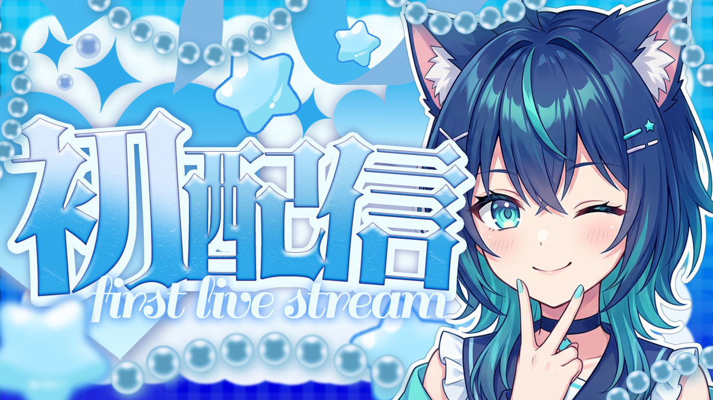
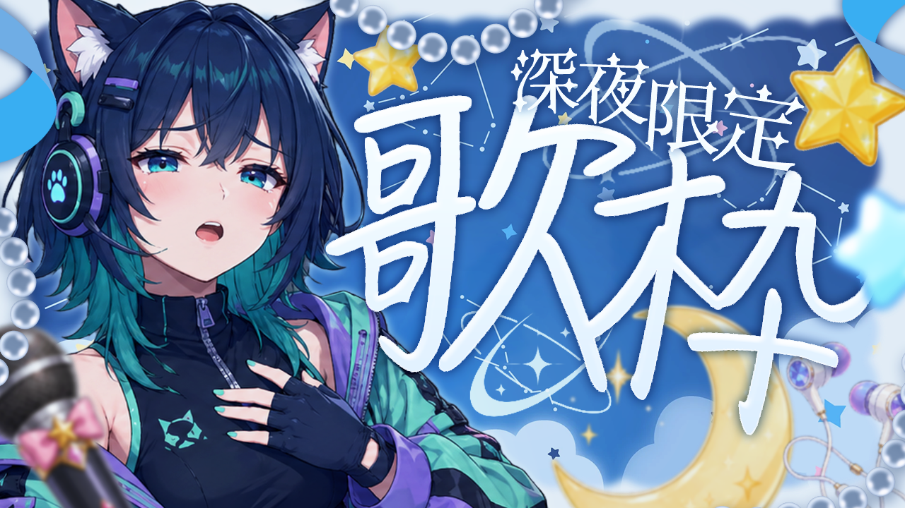
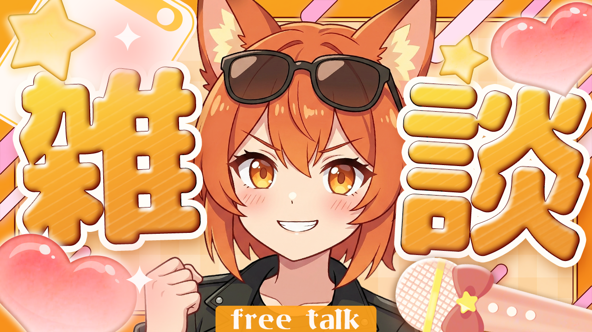
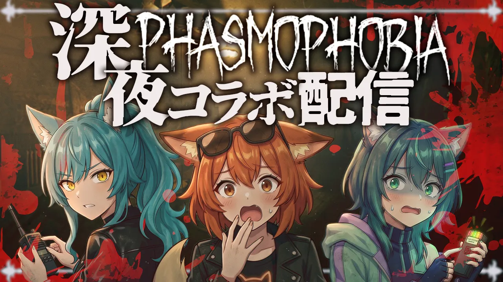
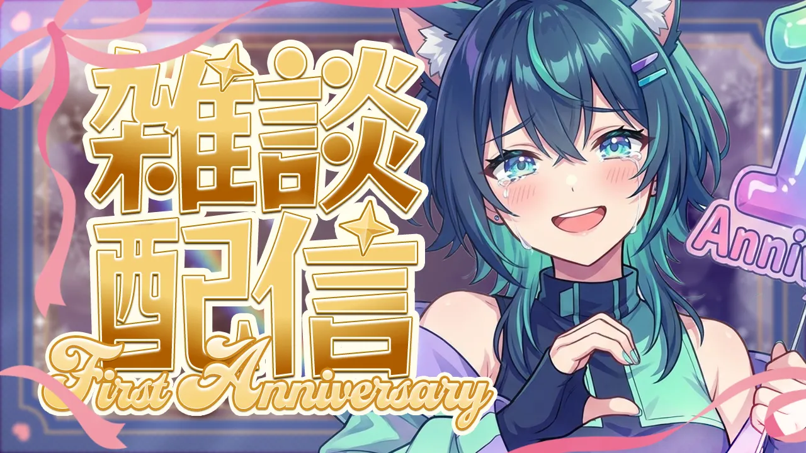
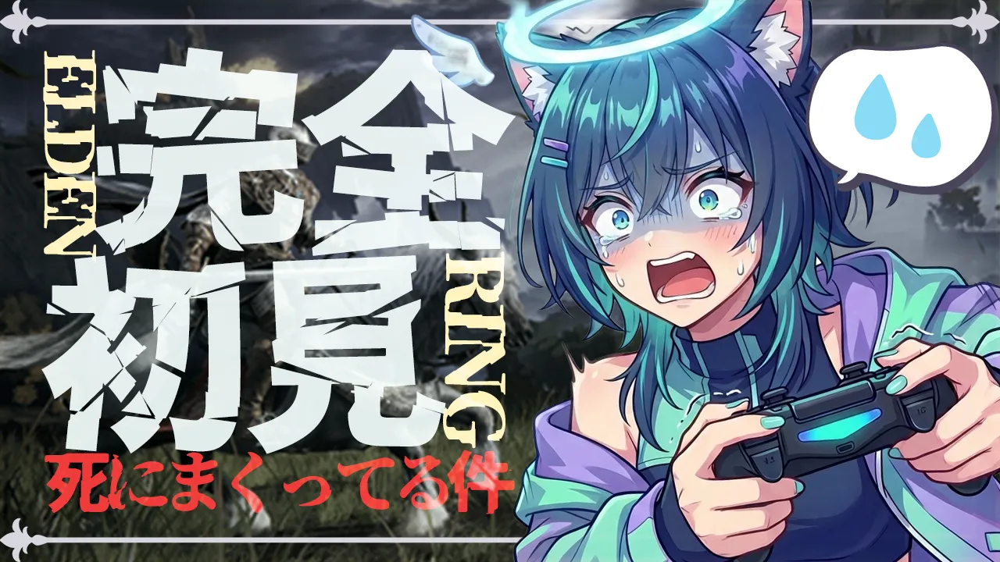
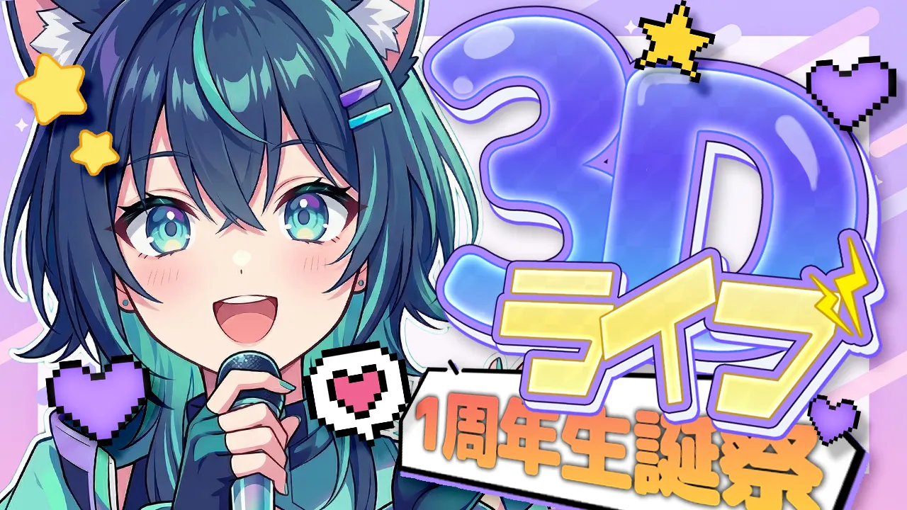
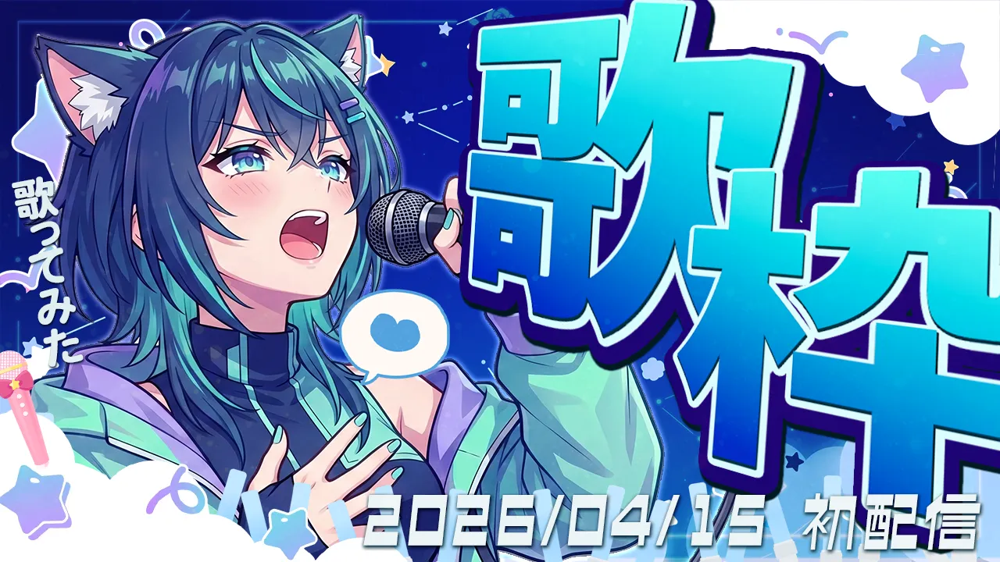

About
初めまして！動画ディレクター兼デザイナーとして活動しているELth (エルス)です。
ターゲット層の心理を読み解き、色彩心理学に基づいたマーケティング視点での制作を行っています。
- 実績：ココナラ ★★★★★ 10件以上
- 対応ジャンル：VTuber / ビジネス
- 納期：3営業日以内
実績・信頼の証
ココナラ 上位ランク獲得
初めまして！動画ディレクター兼デザイナーとして活動しているELth (エルス)です。
ターゲット層の心理を読み解き、色彩心理学に基づいたマーケティング視点での制作を行っています。
実績・信頼の証
ココナラ 上位ランク獲得
THUMBNAIL DESIGN
ココナラの検索画面やYouTubeで
「競合から浮く色」の選定と、
一瞬で伝わる可読性の高いタイポグラフィを設計します。
ABテスト用の複数パターン提案も可能です。
SHORT VIDEO EDITING
冒頭3秒のフックと、
無駄な間を徹底的に排除した超高速テンポで、
視聴者の目を釘付けにします。
TikTok、Shorts、Reelsに完全対応。
DIRECTION & ANALYTICS
ただ編集するだけでなく、
伸びる企画の提案や、
既存動画のデータ分析（アナリティクス）に基づいた
改善策をご提案します。
※ 掲載実績は一例です。画像クリックで詳細を確認できます。

● 意図: 水色×泡エフェクトで清潔感と期待感を演出。「first live stream」の英字で初回の記念感を強調した設計。

● 意図: 深夜ブルー×月と星でしっとりした夜の雰囲気を演出。「深夜限定」の限定感でレアリティと視聴意欲を引き出す設計。

● 意図: オレンジ×ハートで明るく親しみやすい雰囲気を演出。「free talk」で敷居の低さを伝えフラッと視聴しやすい設計。

● 意図: シンプルな「重大発表」で期待と不安を同時に煽る。キャラの驚き顔でクリック衝動を引き出す設計。

● 意図: 暗背景×立入禁止テープのダーク演出で世界観を構築。「降臨」の大げさな言葉でイベント感を最大化。

● 意図: 血飛沫×ホラーフォントで深夜の緊張感を最大化。3人のリアクション顔でコラボのわちゃわちゃ感も同時に伝える設計。

● 意図: ゴールドの筆文字×感動表情で周年の重みを演出。「First Anniversary」の英字がブランド感をプラス。

● 意図: ゲーム実況×リアクション顔芸の王道構図。「死にまくってる件」の自虐テキストで共感と笑いを同時に誘発。

● 意図: パステル紫×ピクセルハートで可愛さと祝祭感を両立。「3D」の立体文字でイベントの特別感を最大化。

● 意図: 深夜ブルー×巨大文字で「歌枠」感を全面に。日付明示と「初配信」で記念感とクリック衝動を引き出す設計。

● 意図: 墨書き風の力強い文字で「本気感」を演出。ポップなキャラと重厚なテキストのギャップがクリックを誘発。

● 意図: 節目感と感謝メッセージで既存リスナーの感情を刺激。青×白のクリーンな配色でお祝い感を強調。

● 意図: 大きな「毎回」文字とオレンジで習慣視聴を促す。日時の明示でリマインド効果を狙った設計。

● 意図: 青×黄の鮮やかな配色でエンタメ感を表現。「歌枠」の大文字で内容を一目で伝えCTRを向上。

● 意図: キラキラと温かい配色で「入りやすさ」を演出。初見歓迎の明示で新規リスナーへの敷居を下げる設計。

● 意図: 「コピペでOK」で手軽さを強調。黄×青の補色で視認性を確保しつつ、「裏技」でお得感を演出。

● 意図: 「ゴミPC買うな」の煽りワードで不安・共感を喚起。暗背景×光エフェクトでハイテク感を演出。

● 意図: 「月??万円」で数字への好奇心を煽るミステリー演出。赤×金の配色で「稼げる」イメージを強調。

● 意図: Instagram風の明るい配色でSNS文脈に馴染ませ、「必ず見て！」の煽りで初心者の不安を解消。

● 意図: 「お前らカモ。」の直撃ワードで強烈な引き。紫背景＋目玉デコで不安感と好奇心を同時に刺激。

● 意図: 「損」を赤×大文字で強調し損失回避心理を直撃。黒×金の配色で高級感と信頼性を担保。

● 意図: 赤テキスト×叫ぶ表情でパニック感を極限まで演出。スクロール中でも強制的に目が止まるデザイン。

● 意図: 二人配置で情報量を凝縮。青×黄の補色コントラストと「LIVE」バッジで緊急性と同時視聴感を演出。

● 意図: 「搾取×TOP5」で社会不満と好奇心を同時刺激。赤×お金エフェクトで視覚的インパクトを最大化。
● 意図: 無音でも内容が伝わるフルテロップと、0.5秒ごとのカット割り。
「こんな動画作りたいんだけど…」
「サムネのクリック率が上がらなくて…」
といったご相談だけでも大歓迎です！
丸投げ（トータルサポート）もOK！
即レスでお返事しますので、お好きな方法でご連絡ください。